多种 Seed 的宏观世界对照
每个世界只展示 4 张核心图。重点检查：大陆轮廓是否有差异、构造是否跟随板块关系、海岸到深海是否连续、最终高程有没有大面积饱和或异常条带。
这里对照的是不同 Seed 的海陆、板块和宏观高程，用来检查算法是否具有稳定的多样性。它不是最终 Minecraft 地表；丘陵、河谷等细节会在后续步骤继续形成。
Seed 1
海洋 68%构造影响 22.68%山系 4.66%高程顶格 0.424%

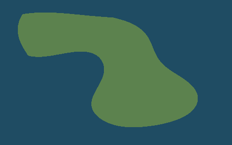

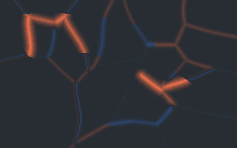

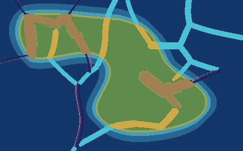

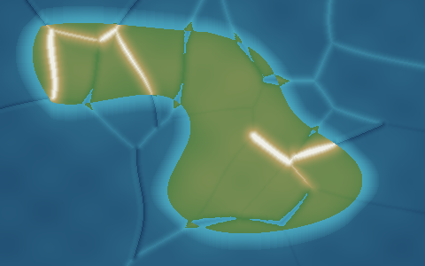
点击任意图片可直接查看原始完整 PNG。不同 Seed 应该保持同一套地理规律，但大陆位置、构造活动与山系分布不应雷同。
Seed 42
海洋 68%构造影响 24.51%山系 5.12%高程顶格 0.048%

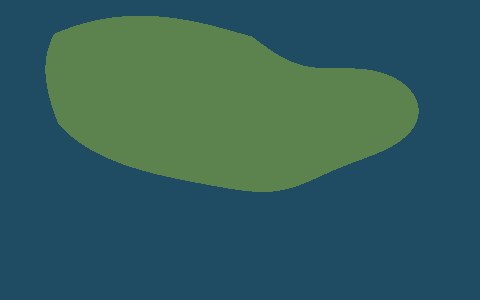

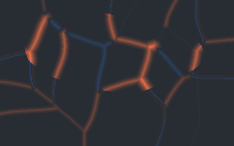

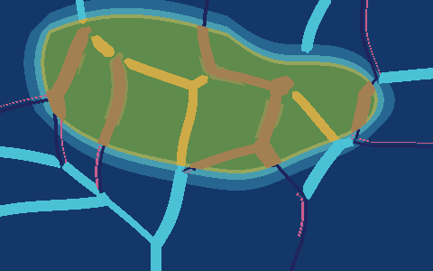

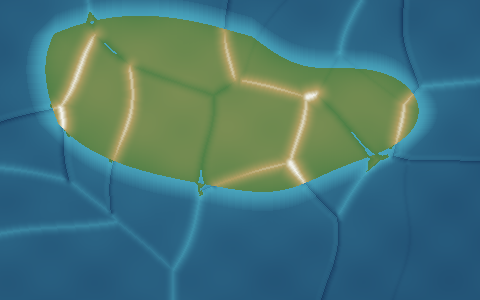
点击任意图片可直接查看原始完整 PNG。不同 Seed 应该保持同一套地理规律，但大陆位置、构造活动与山系分布不应雷同。
Seed 2026
海洋 68%构造影响 27.67%山系 6.26%高程顶格 0.927%

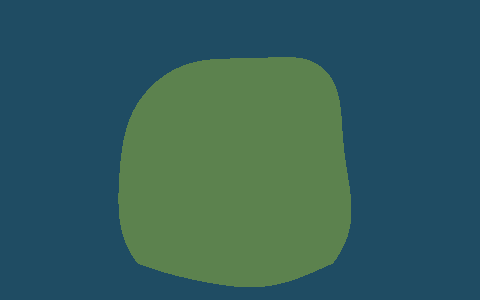

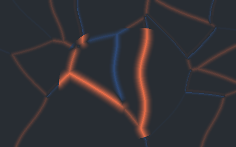

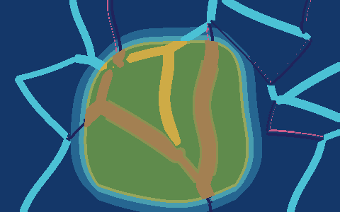

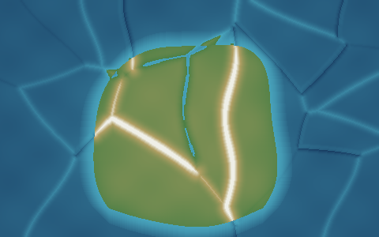
点击任意图片可直接查看原始完整 PNG。不同 Seed 应该保持同一套地理规律，但大陆位置、构造活动与山系分布不应雷同。
Seed 731894205
海洋 68%构造影响 19.74%山系 1.71%高程顶格 0%


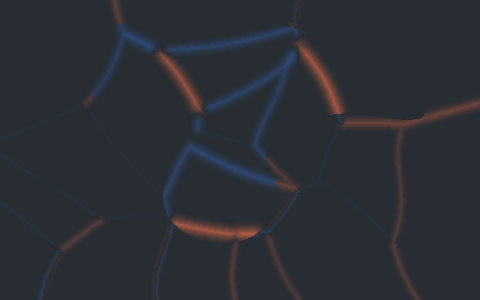

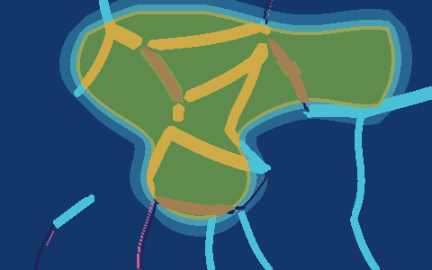

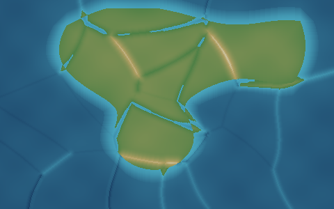
点击任意图片可直接查看原始完整 PNG。不同 Seed 应该保持同一套地理规律，但大陆位置、构造活动与山系分布不应雷同。